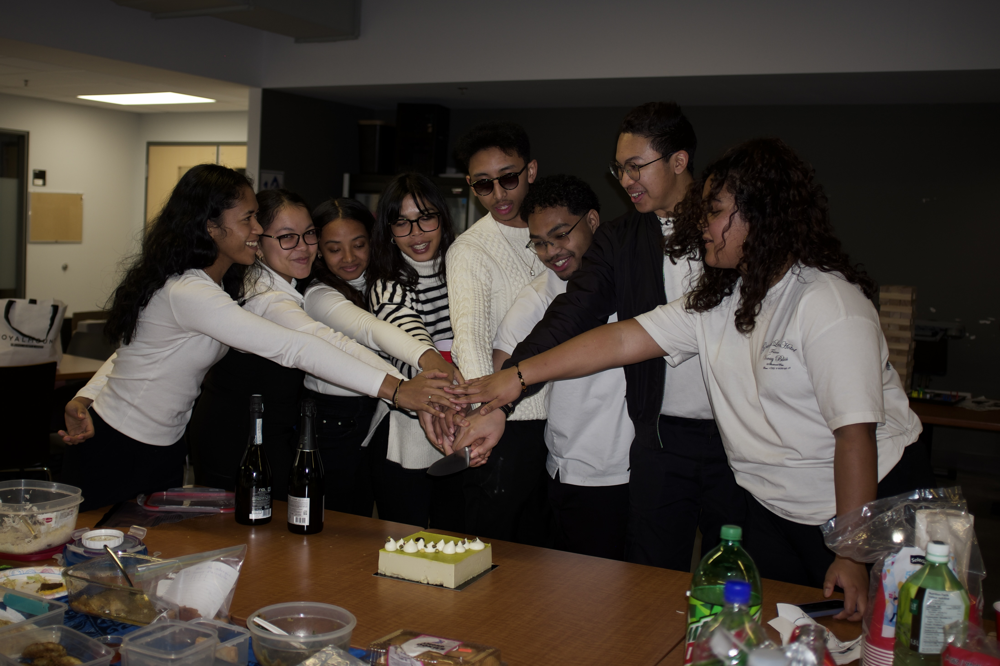
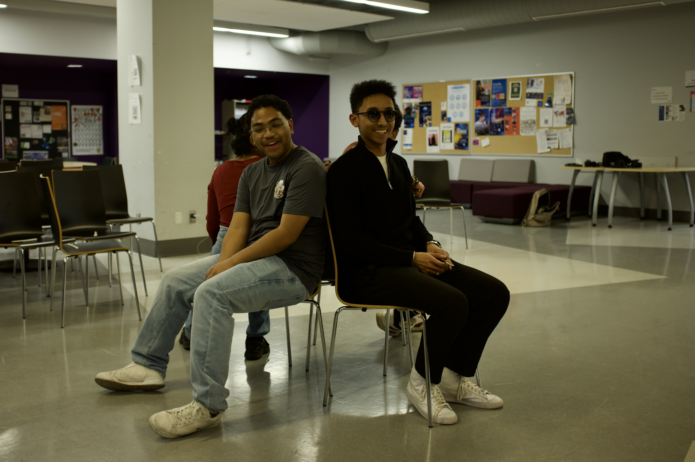
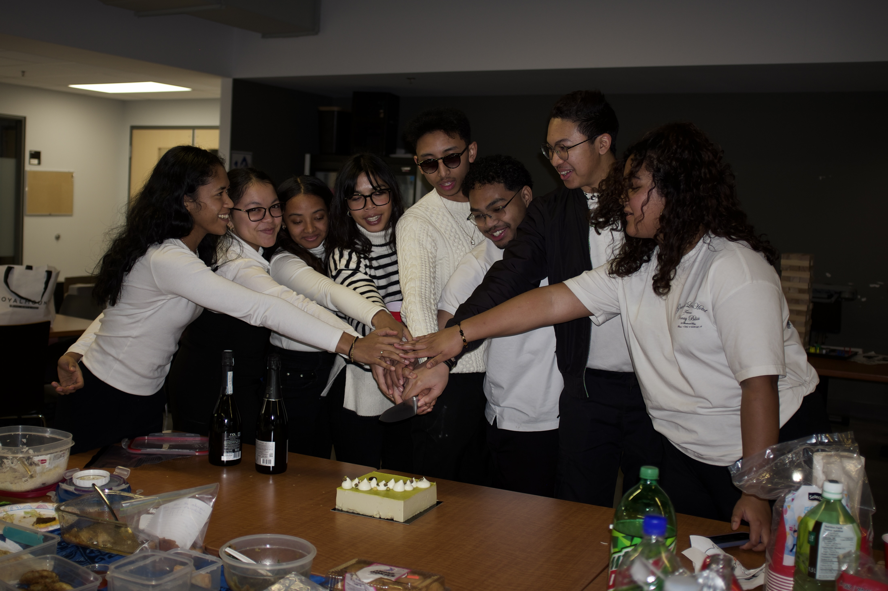
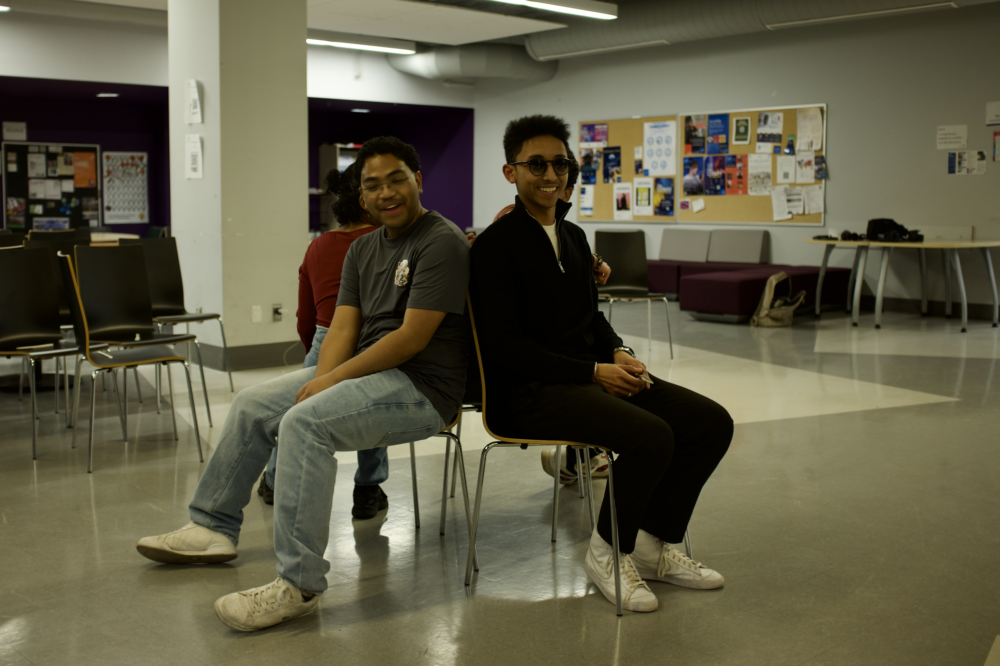
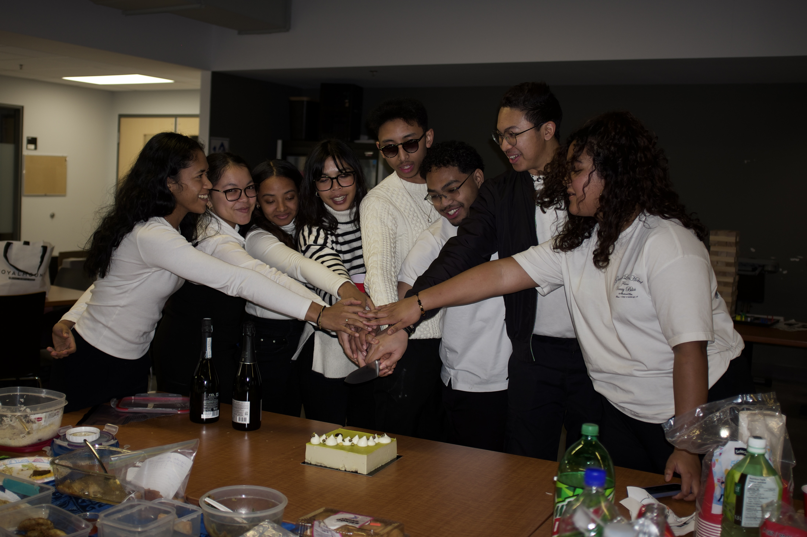
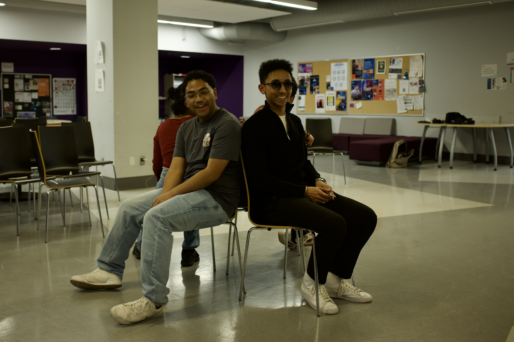

Our Community in Pictures


 



AMU is a community of students from the Université de Montréal that brings together Malagasy and friends of Madagascar in a dynamic, welcoming environment. We are open to everyone who wishes to share, learn, and support one another — whether you are a student, alumni, or part of the Malagasy community in Montreal.
Our mission is to create an environment where every member feels welcomed and supported. We value solidarity, respect, and openness, and aim to promote both personal and academic growth within our community. AMU is a space for mutual support, cultural exchange, and friendship for all.
We aim to help new members integrate into university and social life, organize cultural and academic events, share useful resources, and promote Malagasy culture in Montreal. Each initiative strengthens our sense of belonging and builds a warm, supportive network.

